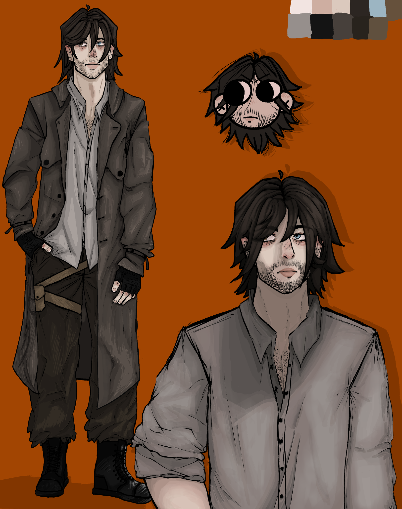
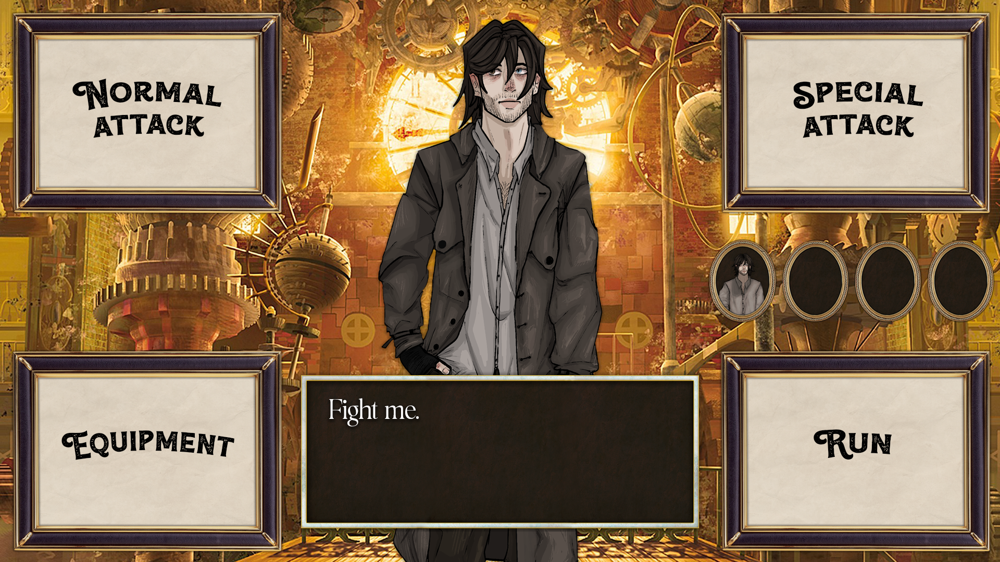
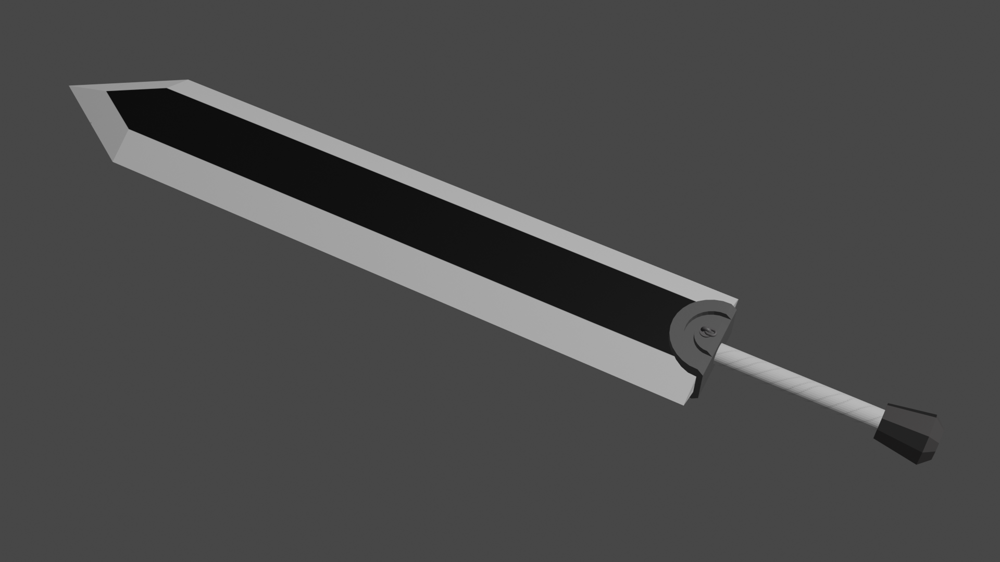

Według przeglądarki przeglądasz stronę na urządzeniu o mniejszej szerokości wyświetlacza niż 1700px. Przepraszam, ale z powodu wielu innych spraw na głowie i deadline'u nie byłem w stanie jeszcze ogarnąć wsparcia w wyświetlaniu strony dla takich urządzeń. Zalecam włączyć stronę na monitorze o rodzielczości co najmniej Full HD (1920 x 1080). Jak tylko dam radę ogarnę ten problem.
Trochę o projekcie
Gamingowe Gamonie(nazwa półrobocza, skrót: GG) to zespół, który założyliśmy w około 6-7 osób w celu stworzenia wspólnie gry. Szczerze powiedzawszy gdy zaczynaliśmy na początku to było wszystko co wiedzieliśmy, że chcemy dokonać. Zaczęło się od tego, że wiele pojedynczych osób, które znam, było zainteresowane stworzeniem jakiejkolwiek gry. Bartek, Rafał i Szymek wtedy zastanawiali się czy podjąć się takiego zadania jako projekt dla pana Michniowskiego; Ja(Krzysiek), Piotrek i Janek już w tamtym momencie od dłuższego czasu myślelismy o zrobieniu prostej gierki, ale jakoś nam to cały czas uciekało z przeróżnych powodów. W końcu zmotywowani wybraniem jakiegoś projektu do pokazania kilka miesięcy później naszemu wychowawcy zdecydowaliśmy się kopnąć w gaz i już w lutym 2023r. zebrałem wszystkich potencjalnie chętnych w celu wtajemniczenia ich w pomysł zrobienia gry. Po kilku tygodniach, kiedy wiele wstępnych kwestii organizacyjnych mieliśmy za sobą, zaczeliśmy pracę nad grą pod roboczym tytułem "Steampunk 1877", a potem nastąpiły jedne z ciekawszych miesięcy w moim życiu do tej pory. Styl naszej pracy został zapożyczony z metodologi Scrum, co znaczy, że przez większość projektu co dwa tygodnie organizowaliśmy spotkanie fizyczne całej ekipy(gdzie ocenialiśmy wyniki wcześniejszej pracy, dyskutowaliśmy o problemach i przydzielaliśmy zadania do zrobienia do następnego spotkania fizycznego lub konstulacji z kapitanem online). Nawet jeżeli teraz projekt się kompletnie wywalił o własne nogi, wydaje mi się, że wiele ciekawego z tego doświadczenia możemy wynieść i wam opowiedzieć. Najpierw jednak pozwólcie, że przedstawią wam naszą ekipą bystrych i skromnych geniuszów, znanych również jako Gamonie.
Poznaj gamoni:
Bartek Szostak
Lead Coder
Krzysiek Rozmus
Project Manager
Szymon Wandzel
Side Coder
Rafał Machnik
Lead Artist
Piotrek Rozmus
Lead Game Designer
Jasiek Tarnawa
Side Artist
Janek Koczur
Lead Writer
Kuba Skraba
Lead Music Artist
Grzesiek Wojcieszyk
Lead Music Artist
Krzysztof Rozmus
Lider projektu
Wiek: 18 lat (2005)
Obecnie uczęszcza do: ZSEEiM w Bielsku (4 klasa)
Praca: Chwilowo brak
Typ osobowości: ENTJ-T
Wykres potencjału:

Chcąc opisać rolę Krzyśka w projekcie i jego cechy osobowości, których najczęściej używał przez 8 miesięcy pracy, najtrafniej będzie go określić kapitanem, pobocznym artystą graficznym oraz pobocznym projektantem gry i łącznikiem między wszystkimi członkami zespołu(jako, że on jedyny znał wszystkich i skonstruował ekipę). Pomysł na projekt takiej skali powstał kiedy Krzysiek i Janek przypomneli sobie, że chcieli wiele wieków temu zrobić razem grę, a w międzyczasie się zbliżał termin na wymyślenie projektu dla wychowawcy w klasie Krzyśka, Rafała, Szymka i Bartka. Nim się obejrzeliśmy skończyliśmy w tym pięknym aktualnym momencie, kiedy to pracujemy nad grą za niedługo już rok w całkiem pokaźnym gronie. No, ale wracając do tego kompletnego nudziarza to ogółem uwielbia grać w gry z ziomkami i spędzać z nimi czas, ale połowe czasu coś tam gada, że ma za dużo na głowie i kończy się na tym, że niektóre gry z nim się przechodziło ponad rok(Janek pozdrawia z Borderlandsami; Bartek i Jasiek z Dark Soulsami). Interesuje również się amatorsko kulturami innych europejskich krajów, w sierpniu 2023 przepracował cały miesiąc zbierając maliny w Norwegii nie będać nawet pełnoletnim.
Dodatkowa praca
Poza jakąkolwiek naszą pracą, o której tutaj wspominamy, istnieje też nie mało pracy wykonanej przez resztę członków naszego zespołu lub pracy, której z jednego albo drugiego powodu nie pokazaliśmy na naszych podstronach. Chciabym tutaj zaprezentować najciekawsze jej przykłady.
Muzyka:
Untitled44 by Bartek Szostak
Bez Tytułu by Grzegorz Wojcieszyk
"Gamonie" by Jakub Skraba (nieskończone)
Grafika:
Rysunek siostry Rafała na podstawie concept arta wykonanego przez Jaśka
Design systemu walki zrobiony przez Krzyśka
Nie skończyłem go zupełnie, bo nie zrobiłem paska życia. Wykorzystałem do tła grafikę z internetu, w końcowym produkcie byłaby to jakaś grafika zrobiona przez nas.
Model "Dragon Slayer" zrobiony przez Jaśka w celu nauki
Dodatkowo głównie Piotrek, ale też i Janek oraz ja pracowaliśmy nad wieloma dokumentami google opisującymi fabułę gry, przedstawiony świat oraz wiele więcej, jednak nie będę się tutaj tym dzielił, bo jest tego za dużo żeby to fajnie pokazać, a upublicznianie tego może nam zaszkodzić, jeśli owy materiał planowalibyśmy jeszcze kiedykolwiek wykorzystać.
Etapy projektu
Nasza praca nad projektem składała się z 5 głównych etapów kompletnie różnej długości. Były to:
- Faza organizacyjna, kiedy to wszyscy namyślaliśmy sie czy chcemy wziąść udział w projekcie. {Spotkanie 1 - Spotkanie 3}
- Faza planowania, kiedy to wszyscy skupiliśmy się na określeniu podstaw fabuły i przedstawionego świata, kierunku artystycznego i muzycznego w celu dogadania jednej wspólnej wizji {Spotkanie 4 - Spotkanie 9}
- Faza właściwej pracy, kiedy to podzieliliśmy się na 4 fronty(graficzny, muzyczny, fabularny i programistyczny) oraz zaczęliśmy pracę nad projektem w pełni. Na jej początku projekt opuścili Grzesiek i Janek, a zjawił się Jasiek {Spotkanie 9 Spotkanie 13}
- Faza Norweskiego Kapitana, kiedy to na cały sierpień wyjechałem do Norwegii na ponad miesiąc aby zarabiać. Prowadziłem projekt zdalnie, tak jak wszyscy chcieli, jednak nie byłem w stanie fizycznie się poświęcać aż tak bardzo jak wcześniej aby próbować zmotywować zespół. Aby wykorzystać też resztę wakacji postanowaliśmy skrócić długość sprintu z 14 dni do 10, co oznacza, że co 10 dni ustalaliśmy kolejne zadania. {Konsultacja 14 - Konsultacja 17}
- Faza dogorywania, kiedy to przez wiele powodów w życiu każdego nie byliśmy wstanie przywrócić momentum oraz wcześniejszego zapału i z każdym dalszym spotkaniem było widać mniejsze zaangażowanie u każdego oraz mniejszą wiarę w projekt {Spotkanie 18 - Spotkanie 22}
Koniec projektu
Wszystko co dobre ma swój koniec. Więc tymbardziej wszystko co nie jest zbytnio idealne ma swój kres. W sobotę 28 października osoby, które pofatygowały się zjawić na naszym typowym spotkaniu(lekko ponad połowa zespołu) przyznały, że nie czują już pasji do projektu oraz kontynuowanie go na razie sprawiałoby im więcej problemów niż przyjemności. Potem skontaktowaliśmy się z resztą i dokładnie jak przypuszczaliśmy nie napotkaliśmy zbytnio sprzeciwów, jak już to wręcz odwrotnie. Dlatego więc postanowaliśmy zawiesić projekt naszej gry, lecz nie znaczy to, że do niej nie wrócimy, ale obstawiam, że jeśli mielibyśmy to za długi czas, kiedy to w naszych życiach będą ku temu lepsze warunki, a my będziemy bardziej doświadczeni. Wciąż jednak stanowczo każdy członek ekipy się zgadza, że nawet jeśli trochę im szkoda projektu, niesamowicie cieszą się z faktu, że w nim w ogóle mieli szansę uczestniczyć oraz prędko go nie zapomną. Czas spędzony na projekcie to zdecydowanie nie był czas stracony, a ja z przyjemnością mogę powiedzeć, iż odniosłem wrażenie, że w sporej części członków ekipy rozwiązanie go wzbudziło ogień i zapał do zrobienia czegoś innego, ale tym razem już z obitym tyłkiem i udoskonaloną wiedzą jakich błędów nie popełniać.